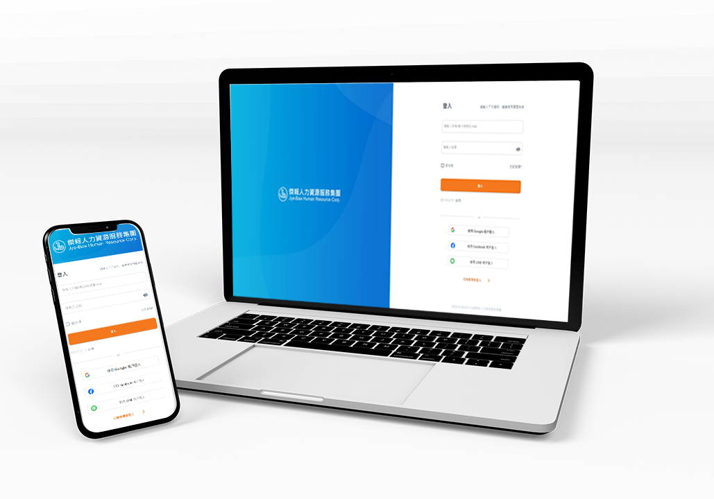

履歷系統
一個開發給HR管理人事資料使用的履歷系統，透過新進人員自行key in個人基本資料的環節，大大降低HR輸入龐大資料與時間， 此系統也能發出信件與簡訊，讓新進人員在進公司報到前，在指定的時間內填寫完個人資料。
專案角色：擔任UI/UX設計、系統功能架構規劃，且與產品經理探討系統功能與可執行方案；也負責對外包商之產出進行UI/UX確認。

WireFrame
履歷管理功能為例
了解系統整體功能後，進行WireFrame流程繪製。
成果
下一個專案：傑報人力銀行系統